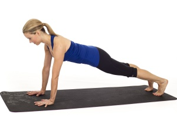

PLANK
Plank teaches us how to balance on our hands while using the entire body to support us. It is a great way to strengthen the abdominals, and learn to use the breath to help us stay in a challenging pose.
How to do it: From all fours, tuck under your toes and lift your legs up off the mat. Slide your heels back enough until you feel you are one straight line of energy from your head to your feet.
Engage the lower abdominals, draw the shoulders down and away from the ears, pull your ribs together and breathe deeply for 8-10 breaths.

comments